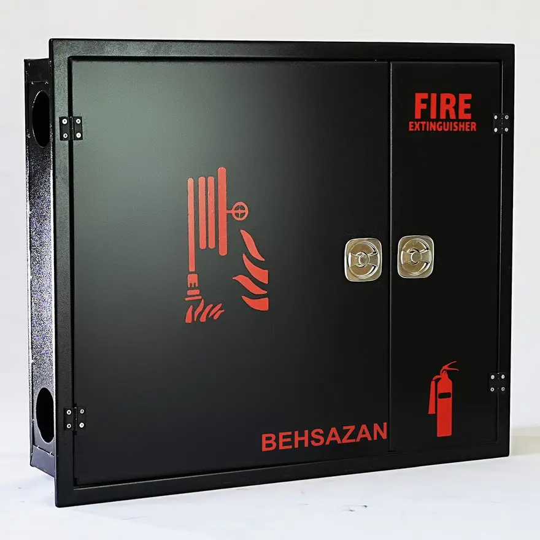

۰۱ رشد آتش در فضای بسته
اتاقی که نفس میکشد
هر آتش در یک اتاقِ بسته مسیری مشخص دارد: رشد، توسعهیافته و افول. تا وقتی اکسیژن کافی است، شعله بزرگتر میشود و گرمایش را به همهجای اتاق میفرستد.
بهسازان سرای مهرآهنگ
در حال آمادهسازی صحنه…
برای بهترین تجربه از هدفون استفاده کنید. صداها ملایماند و هر لحظه میتوانید قطعشان کنید.
پروندهی علمی ایمنی حریق · بهروزرسانی ۱۳ مهر ۱۴۰۵
بکدرفت، فلشاور و انفجار دود شبیه بهنظر میرسند، اما هرکدام منطق فیزیکی خودشان را دارند. این صفحه آخرین یافتههای علمی را در قالب یک سفر سینمایی روایت میکند؛ از رشد آتش تا لحظهای که در باز میشود.
ورود به داستان۰۱ رشد آتش در فضای بسته
هر آتش در یک اتاقِ بسته مسیری مشخص دارد: رشد، توسعهیافته و افول. تا وقتی اکسیژن کافی است، شعله بزرگتر میشود و گرمایش را به همهجای اتاق میفرستد.
۰۱ رشد آتش در فضای بسته
اتاق بسته هوای تازهی کمی دارد و آتش «تهویهمحور» میشود: سوخت هست، اکسیژن کم است. دودِ داغ پر از گازهای نسوخته است و خودش سوخت بهحساب میآید. خطوط آبی همان هواییاند که از زیر در میخزند و رو به پایاناند.
۰۱ رشد آتش در فضای بسته
گازهای داغ زیر سقف جمع میشوند و لایهای هر دم ضخیمتر میسازند. این لایه به همهی سطوح اتاق گرما میتاباند و اتاق را به نقطهی تصمیم میرساند: یا فلشاور، یا ــ اگر اتاق بسته بماند و آتش ضعیف شود ــ آمادهی بکدرفت.
۰۲ فلشاور
بر پایهی تعریف NFPA 921، فلشاور گذاری سریع در رشد آتشِ یک محفظه است که در آن سطوحِ در معرض تابش حرارتی، کموبیش همزمان به دمای اشتعال میرسند و آتش بهسرعت در تمام فضا پخش میشود.
نکتهی کلیدی: فلشاور به ورود هوای تازه نیاز ندارد. محرکش دماست؛ دمای آستانهی آن در ادبیات حدود ۶۰۰°C (۱٬۱۱۲°F) گزارش میشود.
منبع: Fire Engineering، ۲۰۲۰ ↗۰۲ فلشاور
پژوهشهای UL FSRI نشان میدهد اثاث و مواد سینتتیک امروزی میتوانند زمان رسیدن به فلشاور را از بیش از ۲۹ دقیقه به کمترِ ۳ تا ۴ دقیقه برسانند. پنجرهی فرار و پنجرهی عملیات، کوتاهتر شده است.
منبع: UL FSRI ↗۰۲ فلشاور
در پژوهش UL FSRI (کمپین Close Your Door، ۲۰۱۷) دمای اتاقِ با درِ باز به بیش از ۱٬۰۰۰°F (حدود ۵۴۰°C) رسید و اتاقِ با درِ بسته تا حدود ۱۰۰°F (حدود ۳۸°C) پایین ماند.
منبع: UL، ژانویهی ۲۰۱۷ ↗۰۳ بکدرفت
بکدرفت دفلاگریشنِ سریع (احتراق انفجاری) پس از ورود اکسیژن به محفظهای است که پر از سوختِ نسوختهی انباشته است؛ معمولاً در مرحلهی افول، وقتی شعلهی دیدنی ناپدید شده و گازها داغ و فشرده ماندهاند.
تعریف NFPA 921 به نقل از Fire Engineering ↗۰۳ بکدرفت
با گشودهشدن در، هوای سرد از پایین به داخل میخزد (آبی) و گاز داغ و غنی از سوخت از بالا بیرون میزند (نارنجی). مخلوطِ قابلاشتعال در حال ساخته شدن است.
۰۳ بکدرفت
اگر مخلوط به محدودهی اشتعال برسد و یک منبع جرقه در کار باشد ــ اخگر، سطح داغ، شعلهی پنهان ــ چند ثانیه کافی است. هرچه این لحظه آرامتر بهنظر برسد، فریبندهتر است.
۰۳ بکدرفت
گوی آتش از دهانهی در بیرون میزند و موج فشار میسازد؛ برای کسی که مقابل در ایستاده، زمان واکنش وجود ندارد. UL FSRI این رویدادها را «نادر، اما بالقوه کشنده» مینامد.
منبع: پروژهی Backdrafts and Smoke Explosions ↗۰۳ پس از آن: پژوهشها چه میگویند؟
این تاکتیکها برای نیروهای آموزشدیدهی آتشنشانی است. اگر شما با چنین صحنهای روبهرو شدید: دور شوید و با ۱۲۵ تماس بگیرید.
منبع: Fire Engineering، ۲۰۱۶ (به نقل از پژوهشهای NIST و UL) ↗۰۳ تفاوت در یک نگاه
| فلشاور | بکدرفت | انفجار دود | |
|---|---|---|---|
| محرک | افزایش دما و تابش حرارتی | ورود ناگهانی اکسیژن (تغییر تهویه) | گاز نسوختهای که به حفره یا اتاق مجاور نفوذ کرده و با هوا مخلوط شده |
| مرحلهی آتش | بین رشد و توسعهیافته | افول (کماکسیژن) | آتش تهویهمحور با احتراق ناقص |
| نیاز به تهویهی تازه | خیر | بله، علت اصلی | نه الزاماً؛ نفوذ هوا کافی است |
| اثر | اشتعال همزمان همهی سطوح | گوی آتش و موج فشار | اشتعال گاز در جایی که شعلهای دیده نمیشد |
| دما | آستانهی حدود ۶۰۰°C | داغ و فشرده | معمولاً پایینتر از ۶۰۰°C |
دانشمندان هنوز بر سر مرز دقیق «بکدرفت» و «انفجار دود» همنظر نیستند؛ جدول بالا جمعبندی منبع زیر است.
منبع: Fire Engineering، ۲۰۲۰ ↗ویژگیها پنج نشانه که قبل از باز کردن در باید خواند
روی شمارههای روی پنجره بزنید یا از فهرست انتخاب کنید.
این نشانهها برای آگاهی و آموزشاند؛ هیچکدام بهتنهایی قطعی نیستند و تشخیص نهایی با آتشنشانان آموزشدیده است. اگر چیزی از اینها را دیدید: در را باز نکنید، دور شوید و با ۱۲۵ تماس بگیرید.
۲۰۲۴ تا ۲۰۲۶ آنچه علم در این سالها روشن کرد

نمونه کارها تجهیزاتی که با این داستان سروکار دارند
تماس با ما در را با آگاهی باز کنید
مشاوره، طراحی، نصب و اجرا و خدمات پس از فروش سیستم اعلام و اطفای حریق، با تأییدیهی سازمان آتشنشانی اصفهان.
در آتشسوزی: خارج شوید، درها را پشت سر ببندید و با ۱۲۵ تماس بگیرید. این صفحه آموزشی است و جایگزین آموزش رسمی آتشنشانی نیست.
© ۱۳۸۵–۱۴۰۵ تمامی حقوق برای شرکت بهسازان سرای مهرآهنگ محفوظ است.
متن کامل برای خواندن، ذخیره و نقل
بازنگری علمی: ۱۳ مهر ۱۴۰۵ · مقالهی اصلی: پیمان درخشانی، اردیبهشت ۱۴۰۴
خلاصه: بکدرفت (Backdraft؛ در فارسی «بک درفت» و «بکدرافت» هم نوشته میشود)، فلشاور و انفجار دود سه پدیدهی متفاوتاند. فلشاور را دما راه میاندازد، بکدرفت را ورود ناگهانی اکسیژن و انفجار دود را گازِ نسوختهای که به فضای دیگر رسیده و با هوا مخلوط شده است. هر سه نادرند، اما بالقوه کشندهاند و در ساختمانهای امروزی، با اثاث سینتتیک و درهای کمنشتی، زمان رسیدن به آنها کوتاهتر شده است.
آتش مسیری مشخص دارد: رشد، توسعهیافته و افول. تا وقتی اکسیژن کافی است، شعله بزرگتر میشود. اتاقِ بسته اما هوای تازهی کمی دارد و آتش «تهویهمحور» میشود: سوخت هست، اکسیژن کم است. دودِ داغ پر از گازهای نسوخته است و خودش سوخت بهحساب میآید. لایهی داغ زیر سقف هر دم ضخیمتر میشود و به همهی سطوح گرما میتاباند. اینجا اتاق به نقطهی تصمیم میرسد: فلشاور، یا ـ اگر اتاق بسته بماند و آتش ضعیف شود ـ آمادگی برای بکدرفت.
پژوهشهای UL FSRI نشان میدهد اثاث و مواد سینتتیک امروزی میتوانند زمان رسیدن به فلشاور را از بیش از ۲۹ دقیقه در اتاقهای با اثاث قدیمی (طبیعی) به ۳ تا ۴ دقیقه برسانند. یعنی پنجرهی فرار ساکنان و پنجرهی عملیات آتشنشانان بسیار کوتاهتر شده است.
در کمپین UL «Close Your Door» (ژانویهی ۲۰۱۷) دمای اتاقِ با درِ باز به بیش از ۱٬۰۰۰°F (حدود ۵۴۰°C) رسید، در حالی که اتاقِ با درِ بسته تا حدود ۱۰۰°F (حدود ۳۸°C) پایین ماند. پیام کاربردی روشن است: هنگام خواب و هنگام خروج، درها را ببندید.
UL FSRI این رویدادها را «نادر، اما بالقوه کشنده» توصیف میکند.
این نشانهها برای آگاهی و آموزشاند و هیچکدام بهتنهایی قطعی نیستند:
اگر چنین نشانههایی دیدید: در را باز نکنید، دور شوید و با ۱۲۵ تماس بگیرید.
بر پایهی جمعبندی پژوهشهای NIST و UL در Fire Engineering:
تهویه ابزارِ آتشنشانی است، نه راهِ پیشگیری برای عموم. تهویهی نادرست خودش میتواند محرک بکدرفت باشد.
فنهای تخلیهی دود و فشار مثبت (PPV) ابزار آتشنشانان برای تهویهی هماهنگاند: وقتی محل خروج دود از پیش تعیین شده و آتش با آب خنک شده، فن مسیر جریان هوا را جهت میدهد. استفادهی بیهماهنگ یا زودهنگام از همین ابزار میتواند هوای تازه را به آتش برساند. بنابراین فن جای آموزش و فرماندهی عملیات را نمیگیرد.
| فلشاور | بکدرفت | انفجار دود | |
|---|---|---|---|
| محرک | افزایش دما و تابش حرارتی | ورود ناگهانی اکسیژن (تغییر تهویه) | گاز نسوختهای که به حفره یا اتاق مجاور نفوذ کرده و با هوا مخلوط شده |
| مرحلهی آتش | بین رشد و توسعهیافته | افول (کماکسیژن) | آتش تهویهمحور با احتراق ناقص |
| نیاز به هوای تازه | خیر | بله، علت اصلی | نه الزاماً؛ نفوذ هوا کافی است |
| اثر | اشتعال همزمان همهی سطوح | گوی آتش و موج فشار | اشتعال گاز در جایی که شعلهای دیده نمیشد |
| دما | آستانهی حدود ۶۰۰°C | داغ و فشرده | معمولاً پایینتر از ۶۰۰°C |
دانشمندان هنوز بر سر مرز دقیق «بکدرفت» و «انفجار دود» همنظر نیستند؛ جدول بالا جمعبندی منبع زیر است (Salameh، ۲۰۲۰).
تصویرسازیهای سهبعدی مفهومیاند و اندازهگیری واقعی نیستند. مقالهی اصلی: پیمان درخشانی، اردیبهشت ۱۴۰۴ · بازنگری علمی: مهر ۱۴۰۵.